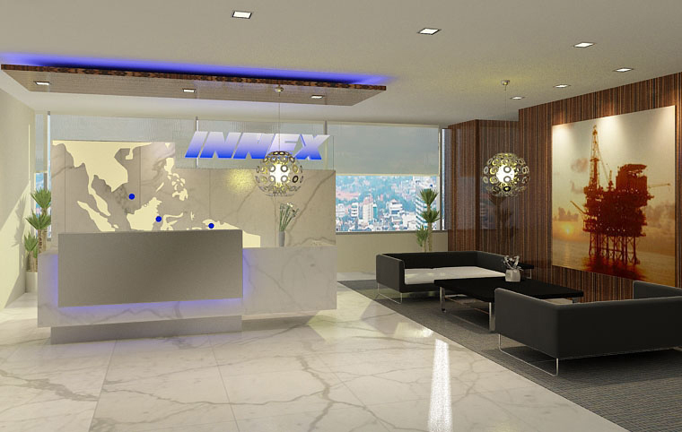
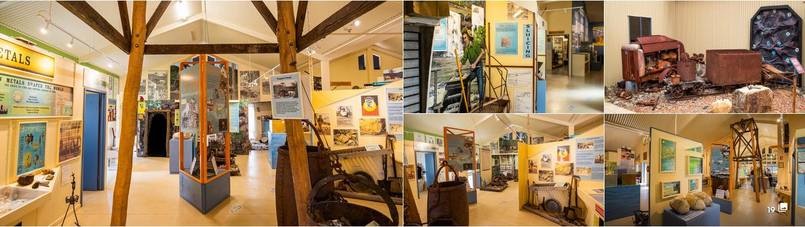
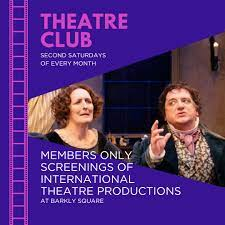
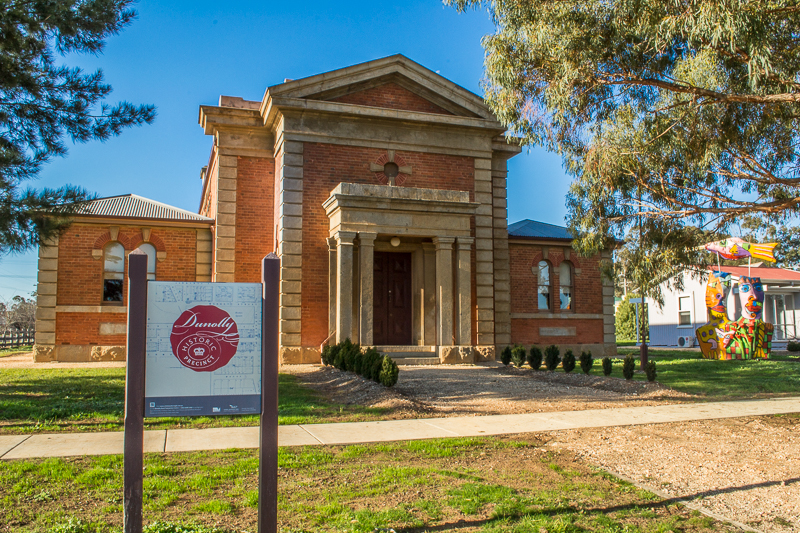
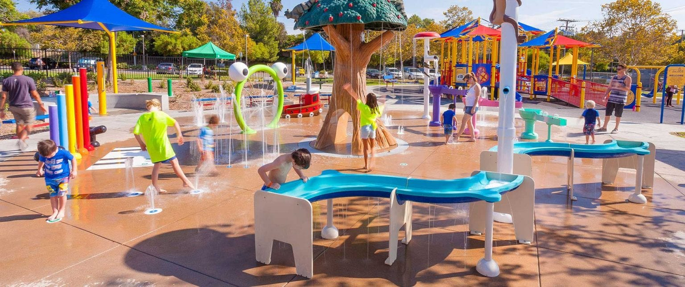
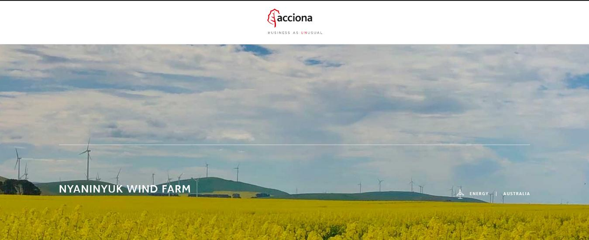
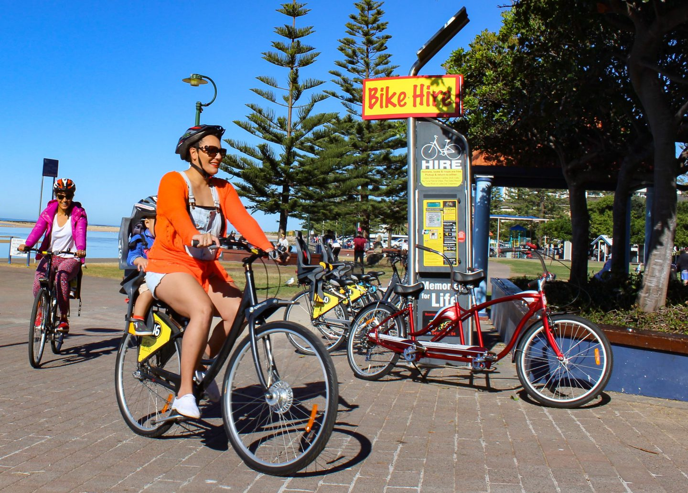

The goldfields has a wide range of sites and experiences for tourists, all in conveninet and inexpensive reach of Melbourne. Only a smattering of them have been realised to any signficant extent. They inlcude Sovereign Hill, Eureka Stockade and the wildlife Park in Ballarat, the art gallery in Bendigo, 'The Mill' in Castelmaine.
In cooperation with each other the smaller towns along the train line, like Maryborough, could leverage that and ADD to those experiences for tourists. The steam train loop and re-instated Maryborough to Castlemaine line would be integral to that.
But to get the tourists and keep them coming back you need more than just provide attractions and leave the the tourist to it. How about 'garnishing' your offerings with some good old fashioned Australian country hopsitality! Have the visitor center staff, and/or other designated individuals, to greet the tourists on the station platform when the steam train arrives. Direct them where to go to meet up with their various tour guides or to the visitor center to sign up for a tour. Provide a friendly face or faces to answer their questions and re-assure them.
Visitor's Center
Any visitors to your town must be wowed as soon as they step off the train. And your visitor center has to be the ketstone of that.
Presentation
The mini theatre is a great idea, however that alone does not raise the current vistor's center much above
the status of underwhelming. As a visitor to Maryborough myself, your visitor centere, in its current form is barely even
noticeable from the platform when exiting the train. Even if I stepped through the door out of curiosity I am immediately hit
with this sort of feel:

After watching your short film in the mini theatre, I am left with the feeling of wanting more. And other than that there really isn't much more to hold my interest. You need to wow your visitors and leave them with the feeling of wanting to get out there and explore the town and surrounds.
All that is really needed are some display cases and shelves that together will turn your visistor's center into a a mini-museum. featuring things like these:
This visitor's center is done really well. It would certainly draw me in for 15 minutes at least to drink in
all the information and objects on display. Maryborough's visitor center should be presented in a similar way. There
is no need for any structure alterations. All it needs is some appropriate display cases, shelves and racks etc.

Greeting Visitors
The vistor center staff should greet the tourists on the platform when the steam service arrives, direct them to where they need to go to meet up with tour guides and stage coach rides and make themselves availabe to proactively answer their questions etc.
If you want them coming back and to spread the word about your town and the goldfields then they need to feel welcomed and important. They need to experience a bit of goold old fashioned Australian country hospitality the moment they step onto the platform. It does not have to be over the top, just genuine in an understated Australian way.
Possible experiences for visitors
The following is just a selection of ideas that could be explored. I am sure residents of Maryborough and surrounding towns will come up with many more ideas.
Wagon & Coach Rides
One really obvious experience for tourists, that cities like Ballarat and Bendigo would struggle with but that the
likes of Maryborough could EASILY provide, are wagon, stage coach and buggy rides. Both around the town center and
even between it and the closer satellite towns.

How about tours by horse around the lake, goldfields ruins and diggings?

Gold detecting
A small number of tourists, particuarly any Australians, would likely love to have a go at gold detecting.

Gem stone fossicking
Australians like me are more interested in fossicking for quartz crystal and chalcedony varieites. And they are
a great deal easier to find than gold nuggets.

Wildflowers
Many Australian tourists, including this one, LOVE Australian flora. And you have one prolific native wild flower across
the area that I have noticed in passing. Bracteantha viscosa or Sticky Everlasting Daisy. No doubt there are MANY other
species in spring, particularly when rainfall is good.

Indigenous Australian Art Gallery
Bendigo as a European Art Gallery. So why could Maryborough feature an Indigenous Australian art gallery.


Indigenous Australian Cultural Activities
How mabout a range of Indigenous Australian cultural experience. It could inlcude smoking ceremonies, teaching tourists
to start a fire without matches or flints, recognize bush tucker plants and how to prepare and eat them and how to locate
water. One indigenous Australian I know of, Richard, seems to be an encyclpedia of knowledge. It seems a waste if there is
no avenue for individuals such as him to share some their expertise with visitors.
Cycling
How about tours by cycle around the lake, goldfields ruins and diggings? With a steam train loop the rail trail,
currently under construction, would become yet another cycling experience for tourists. Rather than a bit a of a whie
elephant.

Re-enactments At Historic sites
You have a 19th century police station / court house and lockup in Dunolly. So a coach, buggy, wagon or tour bus ride to
the court house to see a re-enactment of a court case conducted by members of any local drama societies and theatre companies.



Sewing machine museum & other niche museums
At one point Maryborough apparently had a sewing machine museum, so bring that back! Along with some other small niche
museums. Crystals, gemstones and gold nugget relicas, particularly gold nuggets that have recently been found. Movie and
theatre memorabilia. Antique bottles and other atrifacts from the diggings.

Historic Paramount theatre
You have a great 1926 vintage Paramount Theatrel. Apart form Hollywood movies you could create 30 minute documentaries detailing
various aspects of Maryborough's history. Show them to interested visitors in comfort, and then follow up the viewings
with tours of the sites featured.

Public pool
It is apparently under rennovation and that is great. Put a splash park in it! But not a McSplash Park.
How about one with a goldfields twist. It could include structures that resemble sluices and boilers etc.
Something along these lines but that screams 'goldfield diggings'.

Wind farm
What about connecting with the windfarm managers and taking tourists on an information tour of the wind farm! Some tourist would find
this very interesting.

Bicyle hire
With a regular and signficant flow of tourists, due to the steam train service and re-instated train line between Castlemaine
and Maryborough, suddenly the rail trail becomes a GREAT idea. How about providing a bicycle and eBycycle hire service for your Rail Trail.
You could cooperate with Castlemaine and provide a hire service at both ends for Asian tourists who will not have their own bicycle. They
could hire at either the Maryborough or Castelmaine end and drop off the bike at the opposite end of the trail. Push bikes for those who are
fit and realish the 50km challenge. eBikes for the less fit.
